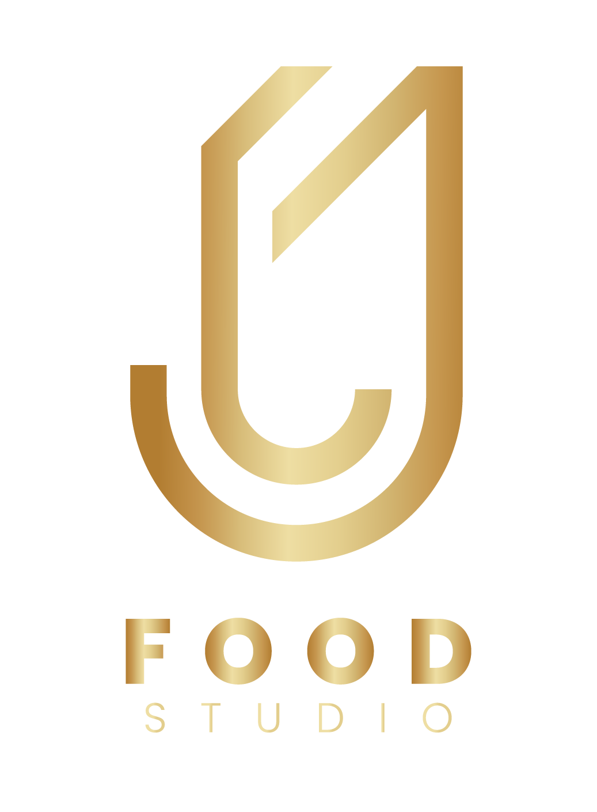

Cine gastronómico · Dark & moody · Precisión técnica
Imagen gastronómica que despierta apetito
Fotografía y video para restaurantes, marcas de alimentos y pastelería.

Cargando modo 3D…
DEMO REEL JJ
Logo
CTA
Portafolio
ExplorarServicios
Trabajemos juntosFotografía gastronómica
Imágenes profesionales para restaurantes, marcas y productos.
Video gastronómico
Contenido audiovisual para redes, campañas y branding.
Dirección de arte
Concepto visual, composición y estilo para cada proyecto.
Food styling
Preparación y estilismo de alimentos para foto y video.
Asesorías
Consultoría visual para mejorar la imagen de tu marca.
Formación
Ver todoSobre JJ
Conoce másSoy JJ, fotógrafo gastronómico y fundador de JJfoodstudio. Durante más de 8 años he trabajado con restaurantes, chefs y marcas desarrollando imagen gastronómica profesional.
Mi enfoque combina fotografía, video, dirección de arte y conocimiento real de cocina.
Hagamos algo delicioso
Video de JJ hablando e invitando a trabajar juntos.